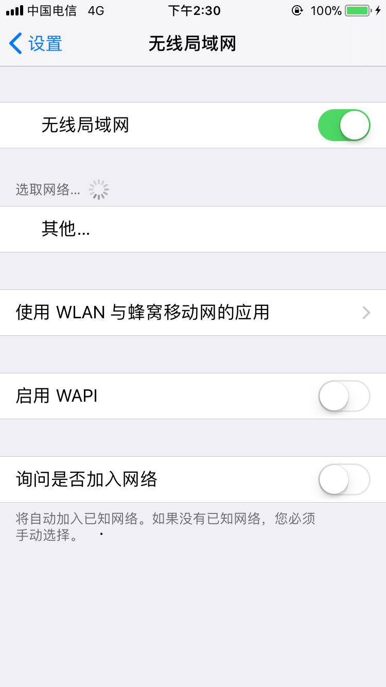
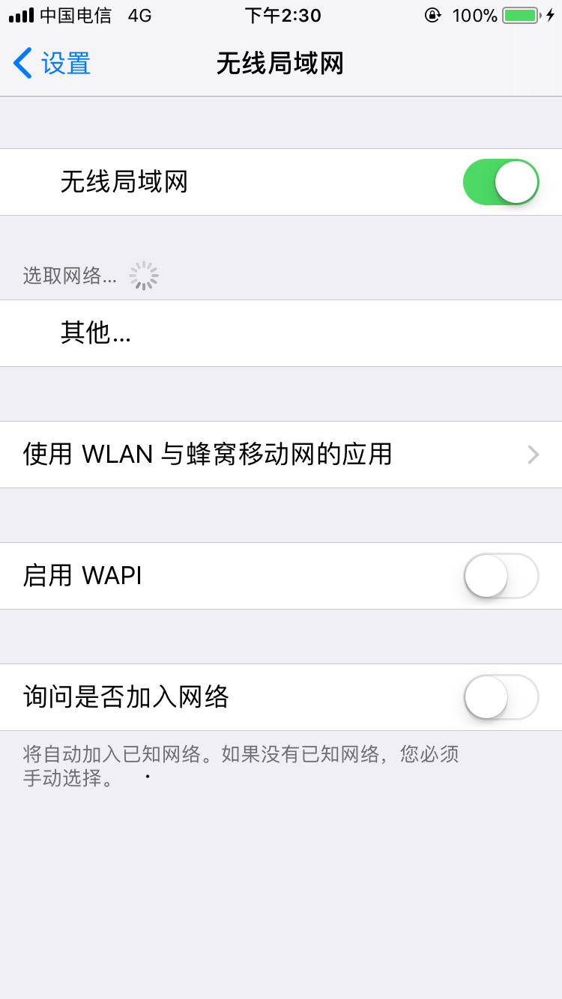

1.联网模式
联网模式需要手机和路由器能配置联网的情况下使用，配置路由器联网详情见 路由器配置
2.局域网模式
在路由器无法联网的情况下，则需使用局域网模式，此模式下手机直接连接路由器wifi。 路由器无线WIFI的名称：ivc；密码：ivc65462853，wifi列表里找不到ivc时使用手动添加/其他网络，安全性选择WPA2，具体配置如下图所示：

如果连接上路由器wifi后还未能发现设备，请尝试设置->更新设备。
联网模式需要手机和路由器能配置联网的情况下使用，配置路由器联网详情见 路由器配置
在路由器无法联网的情况下，则需使用局域网模式，此模式下手机直接连接路由器wifi。 路由器无线WIFI的名称：ivc；密码：ivc65462853，wifi列表里找不到ivc时使用手动添加/其他网络，安全性选择WPA2，具体配置如下图所示：

如果连接上路由器wifi后还未能发现设备，请尝试设置->更新设备。